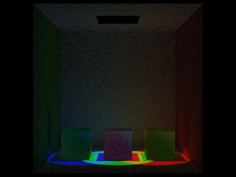
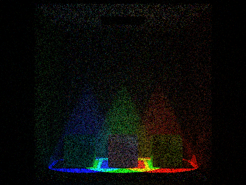
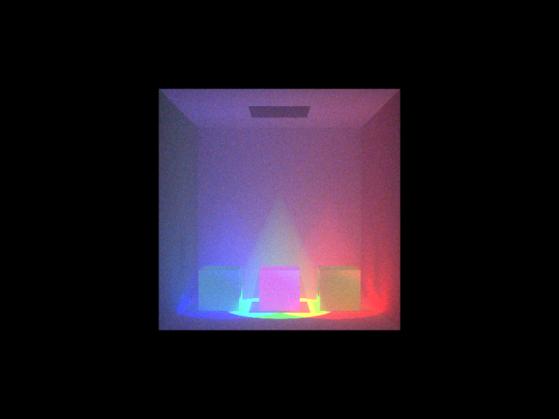
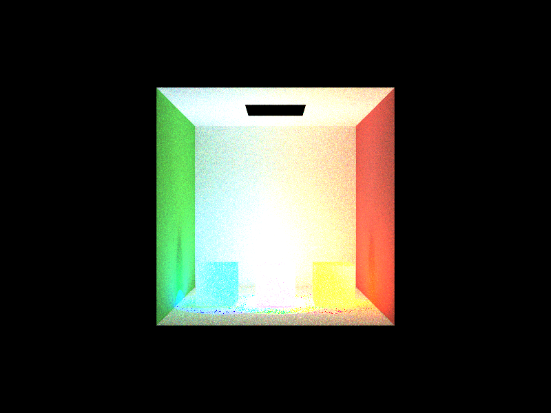

§ 1
Summary
In this project, we built upon the Homework 3 pathtracer engine to enable it to perform volumetric scattering. This enables it to render fog, smoke, and other diffuse mediums that interact with light in the air. We created a Medium structure and updated the ray-tracing algorithm to check for particles in the air, not just on a surface, to render lights' interactions with fog.
§ 2
Technical Approach
-
First, we created a new DAE file that had three spotlights - one red, one green, and one blue. We did this by
implementing the
sigma_a(absorption coefficient) - probability of light being absorbed per unit distancesigma_s(scattering coefficient) - probability of light being scattered per unit distanceg- parameter used to evaluate the Henyey-Greenstein phase function.
This header file also included helper function to calculate the extinction coefficient (
SpotLight::sample_L() with
a falloff angle and exponents so .dae spotlights actually lit the scene. These spotlights were then
given color properties so that they were red (0 0 100 100), green (100 0 0 100), and
blue (100 0 0 100). Using the values of 100 ensured the spotlights were bright enough
to interact with fog. Additionally, using
the full RGB gamut ensured we
could demonstrated realistic color mixing.
This DAE file, when rendered using the existing pathtracer from HW3, would only show three colored circles on the ground:

First, we worked on hard-coding in a uniformly dense fog and rendering it using isotropic scattering. This is not perfectly realistic, but is computationally cheaper and less difficult to implement. We created a
Medium.h header file that stored information about the fog:
sigma_t)
and single-scattering albedo (probability that an interaction causes a scatter versus an absorption).
Then, in
pathtracer.cpp, we implemented changes in
PathTracer::est_radiance_global_illumination to handle the newly added fog. We hard-coded
in fog defined using Medium.h and update the ray-tracing logic to check for fog particles. The
probability that a ray is hitting a fog particle is calculated using an exponential distribution based on the
fog's density. If this distribution determines that we did hit a particle, a shadow ray is drawn from the
particle to the light. If the particle is in shadow, no direct lighting is applied. If it is in light,
the transmittance of that particle is calculated using the Beer-Lambert law. The ray then gets cast in a purely
random direction (isotropic scattering) and recursively calls
PathTracer::est_radiance_global_illumination until the maximum ray depth is reached. All the light
is then combined to get the final color to output.

After getting this isotropic approach working, we moved to adjusting the
g parameter in the
non-uniform fog. This moved the light from pure isotropic scattering to forward scattering, which is much
more like how light scatters through fog in reality. Instead of shooting off in any random direction, it picks a
random direction within a certain range of angles that in a similar direction to the original ray.
This created a lot of noise, as in order to see the effect of this, the maximum ray depth needed to be increased
significantly. We added Russian roulette and importance sampling to reduce noise. We were able to use 2048 sampling to
generate a result that has the minimal amount of noise.
§ 3
Results


§ 4
References
§ 5
Contributions
- Updated pathtracer to handle hard-coded uniform fog using isotropic scattering for milestone report.
- Wrote
index.htmlfile for final write-up. - Helped work on reducing noise in volumetric scatter renders
- Wrote new
.daefile that included spotlights for testing/rendering. - Helped work on reducing noise in volumetric scatter renders
- Wrote
index.htmlfile for milestone & final write-up. - Edited together video for milestone write-up.
- Helped work on reducing noise in volumetric scatter renders
- Worked on
index.htmlfile for milestone write-up. - Helped work on reducing noise in volumetric scatter renders